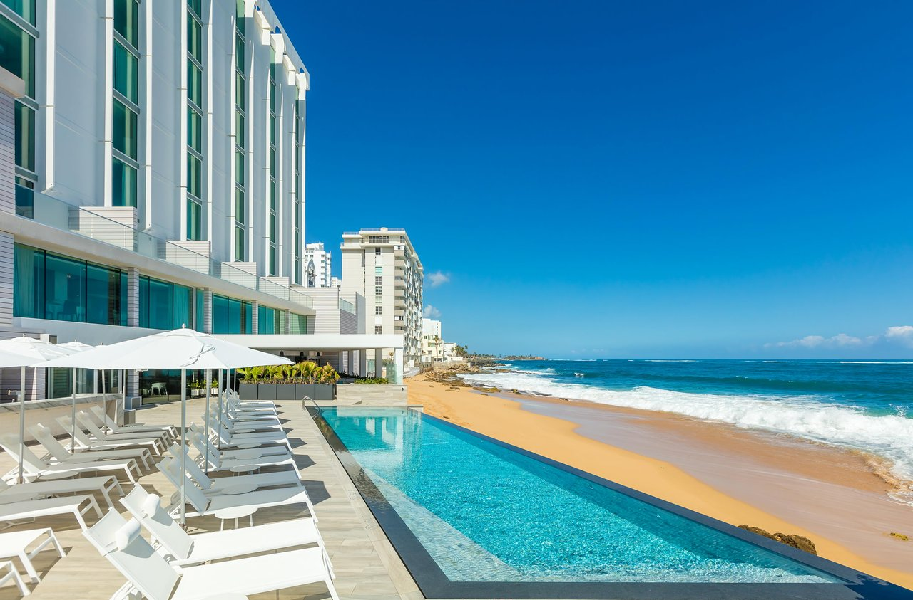

San Juan
San Juan, Puerto Rico's capital and largest city, sits on the island's Atlantic coast. Its widest beach fronts the Isla Verde resort strip, known for its bars, nightclubs and casinos. Cobblestoned Old San Juan features colorful Spanish colonial buildings and 16th-century landmarks including El Morro and La Fortaleza, massive fortresses with sweeping ocean views, as well as the Paseo de la Princesa bayside promenade.
If you’re looking for a beach escape with a vibrant city life, San Juan has it down to perfection. San Juan is one of the most accessible and affordable beach escapes in the Caribbean. Unlike most city beach destinations, you will find the beaches of San Juan to be relaxed and uncrowded on weekdays. Enjoy miles of beaches with plenty of room to relax on the sand. Whether you like a trendy Miami style or a more casual scene, you can find a beach in San Juan to meet your needs.
In just a 3.5 hour flight from many cities in the US, you can find yourself laying under a palm tree enjoying the pleasures of a Caribbean island, with a vibrant culture, friendly hospitality and delicious food that Puerto Rico is known for.
Condado is a trendy and chic beach destination with luxury beachfront resorts. Ocean Park beaches are more casual and uncrowded. Escambron is picture perfect with hundreds of palm trees and crystalline waters. Be sure to leave time to visit the many nearby beaches around the island that feel like a world away.

Serafina Beach Hotel, San Juan, Puerto Rico
Condado Beach
Enter the trendy Condado Beach where sand, sun, water, casinos, shopping, music under the stars and trendy beachfront hotels and casinos come together Miami Beach style. Condado beach is not only beautiful, but also fun with wave action.
Great hotels face the beach of Condado, making it very convenient for hotel guests to enjoy the beach as well as water sport activities just a few steps away. You can find shaded spots under palm trees to the far left at Ventana al Mar park for the perfect nap with your loved one.
The beach of Condado is a very popular beach among tourists in San Juan craving for a Caribbean beach resort experience with all the vibrant life of a city just steps away. Condado is often compared to the vibe of Miami Beach, the cultural experiences, nearby beaches and world class attractions make Condado Beach even more attractive, not to mention the weather is warmer all year round.
 Condado Vanderbilt Hotel, Puerto Rico
Condado Vanderbilt Hotel, Puerto Rico
On site, guests will find direct beach access as well as two swimming pools that are accompanied by a plunge pool and cabanas. There’s also a spa featuring salt-inspired treatment options. Byblos restaurant offers Mediterranean mezze and large plates in a colorful Moroccan-styled setting, and Florida Cookery offers locally inspired breakfast.
Condado Vanderbilt has a storied heritage of elegance now fused with distinctly modern amenities. This unique San Juan beach resort -- originally built in 1919 and restored to its distinguished and luxurious patina -- is located in San Juan, Puerto Rico’s most stylish neighborhood. It offers visitors unsurpassed cuisine, exquisite rooms and suites, and highly personalized service.
Top